地政学
ヴィリニュスはEUとNATOの東縁に立つ首都で、ベラルーシ国境にも近いです。議会、政府、外交機関、軍事協力、ウクライナ支援が集中し、独立回復の記憶と現在の安全保障が、日常の政治感覚を形作ります。国境感覚も強いです。
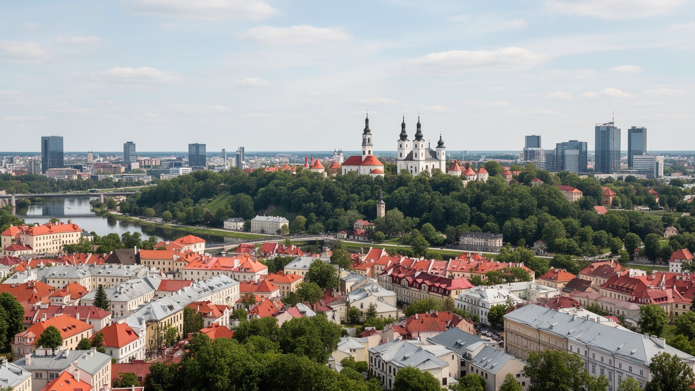
🇱🇹 リトアニア共和国 / 首都 / World City Atlas
バロックの旧市街、リトアニア国家の政治中枢、EUとNATOの東縁、大学都市、ITと金融の仕事、多言語の記憶、ユダヤ史、森と川に近い住宅地が一つに重なる首都です。
都市の骨格
ヴィリニュスはネリス川とヴィルネレ川の谷、丘、森、旧市街、新市街、住宅地が近い距離で結ばれる首都です。リトアニアの国家機能と、ポーランド語、ロシア語、ベラルーシ語、ユダヤ史の記憶が、静かな街路の中で重なります。
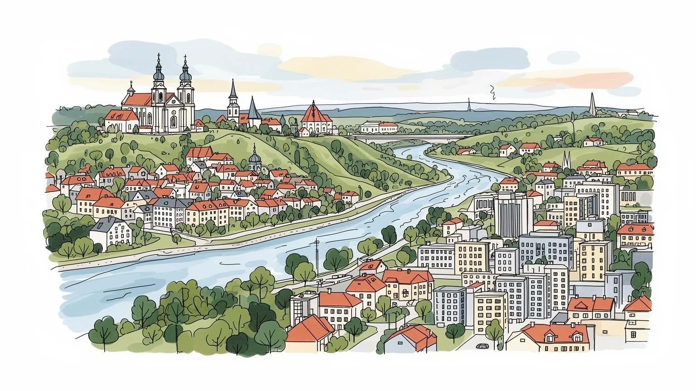
ヴィリニュスはEUとNATOの東縁に立つ首都で、ベラルーシ国境にも近いです。議会、政府、外交機関、軍事協力、ウクライナ支援が集中し、独立回復の記憶と現在の安全保障が、日常の政治感覚を形作ります。国境感覚も強いです。
雇用は金融、IT、行政、大学、観光、医療、建設、小売、物流に広がります。高技能職が増える一方、接客、清掃、配送、介護、公共交通も都市を支え、賃金上昇と住宅費の関係が生活を左右します。技能の幅も広いです。
カトリック教会、正教会、ユダヤ共同体の記憶、大学、文学、劇場、現代美術が重なります。ポーランド語圏やベラルーシ系の文化も見え、信仰と多言語の歴史が街の雰囲気を深くしています。街の記憶を深くします。
住民は旧市街、新市街、ソ連期団地、郊外住宅、森や川辺を使い分けます。観光客は世界遺産の旧市街、教会、丘、市場を歩きますが、家賃上昇、渋滞、冬の暗さも都市の日常です。日常と旅がすぐ近くで重なります。
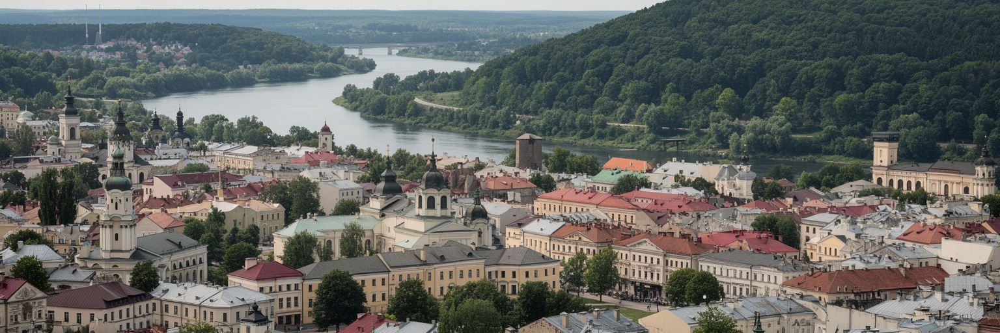
ヴィリニュスは海港ではなく、川の谷と丘に置かれた内陸の首都です。ネリス川とヴィルネレ川が市街地を刻み、ゲディミナス城の丘、三つの十字架の丘、旧市街の屋根、北側の新しいビジネス地区、郊外の森が短い距離でつながります。この地形は、都市を一枚の平らな中心街としてではなく、見上げる丘、下る坂、曲がる川、森へ抜ける道として感じさせます。リトアニア国家の中枢でありながら、行政庁舎や議会のすぐ近くに教会、大学、住宅、中庭、緑地があり、首都の威圧感は比較的抑えられています。水辺は近年、散歩、サイクリング、カフェ、イベントの場所として整えられ、旧市街の観光だけではない日常の軸になっています。ただし、地形の美しさは交通や住宅の課題も作ります。坂道、冬の凍結、川を渡る橋の混雑、郊外化による車依存は、働く人や高齢者、子どもの移動を難しくします。森と川に近い首都であることは大きな魅力ですが、開発が緑地を細らせれば、都市の強みも失われます。ヴィリニュスを読むには、バロックの屋根だけでなく、川筋、丘の眺め、森の縁、住宅地から中心部へ向かう毎日の移動を同じ地図に置く必要があります。中心部の小ささは歩きやすさを生みますが、郊外の成長を受け止める道路や公共交通の設計も同じくらい重要です。眺望を守る規制も都市景観の要です。
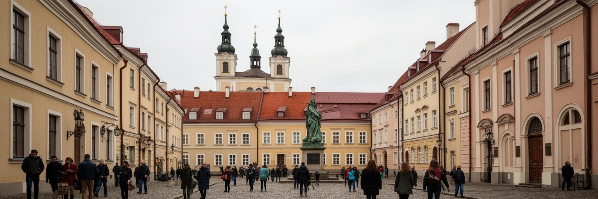
ヴィリニュス旧市街は、リトアニア大公国とポーランド・リトアニア共和国の記憶を濃く残す都市空間です。大聖堂広場、ゲディミナスの塔、大学の中庭、バロック教会、修道院、商人の家並み、狭い坂道は、東西の文化と信仰が長く交差した時間を示します。世界遺産として保存される街並みは観光客にとって歩きやすい舞台ですが、歴史の層は単純ではありません。リトアニア語、ポーランド語、ルテニア語、イディッシュ語、ロシア語が時代ごとに公共空間へ現れ、支配と自治、信仰と商業、教育と軍事が何度も形を変えました。旧市街を美しい石畳としてだけ見ると、周辺地域を治めた大公国の多民族性、カトリック化、ユダヤ人街、戦争と占領の記憶を見落とします。現在の旧市街ではホテル、飲食店、土産物店、大学、行政、住宅が混在し、保存と生活の調整が続きます。観光需要が強まるほど、家賃、騒音、短期賃貸、住民向け商店の減少が問題になります。歴史地区を守るとは、建物の外観を残すことだけではなく、人が暮らし、学び、祈り、働ける密度を保つことです。ヴィリニュスの旧市街は、国家の起源を語る象徴であると同時に、多くの言語と共同体が重なった都市の複雑さを歩いて理解できる場所です。保存と更新の均衡が、歴史を観光資源だけにしない条件になります。中庭の生活感も重要です。
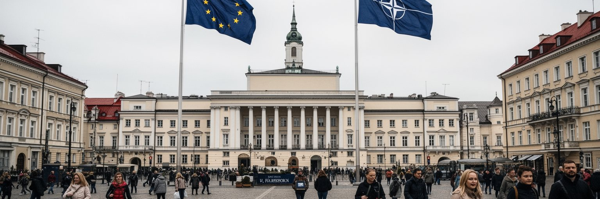
ヴィリニュスはリトアニアの政治中枢であり、議会、政府、外務、外交団、裁判所、国立機関が集中します。首都の政治感覚は、独立回復の記憶と現在の安全保障によって強く形作られています。ソ連からの独立をめぐる運動、テレビ塔の犠牲、EUとNATOへの加盟、ロシアのウクライナ侵攻後の防衛強化は、教科書の歴史ではなく、街の記念碑、式典、公共討論、予算配分に残ります。ベラルーシ国境に比較的近い位置も重要です。ミンスクから逃れた民主派、ベラルーシ系住民、ウクライナ避難民、ロシア語圏の情報環境が、ヴィリニュスの政治空間を国境の外へ広げています。市民は普段、カフェや大学、職場で穏やかに暮らしながらも、徴兵、防空、サイバー防衛、エネルギー安全保障、偽情報への警戒を現実の課題として意識します。小国の首都では、外交の選択が生活費、交通、教育、難民支援、メディア環境に近い距離で影響します。安全保障は軍だけの問題ではなく、信頼できる行政、強い市民社会、独立した報道、多言語の情報提供、外国人住民を孤立させない制度に支えられます。ヴィリニュスの政治都市としての重みは、巨大な官庁街の規模ではなく、国の存立をめぐる論点が日常の街路に近いところにあります。国会前の広場や記念施設は、政治が住民の記憶と結びつく場にもなり続けます。
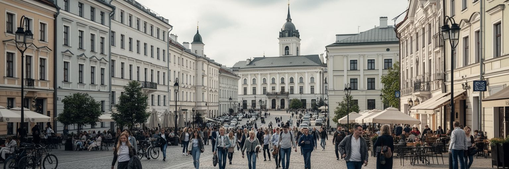
ヴィリニュスの経済は、行政都市と大学都市の基盤に、金融、IT、フィンテック、ビジネスサービスが重なって成長しています。リトアニアはユーロ圏に入り、規制環境と英語で働ける人材を生かして、決済、銀行サービス、ゲーム、サイバーセキュリティ、共有サービスセンターを集めました。北側の新市街には高層オフィスが並び、旧市街の近くにも共同オフィス、スタートアップ、法律事務所、会計、デザイン、広告の仕事が広がります。大学と専門学校は若い人材を送り出し、海外から戻るリトアニア人や、ベラルーシ、ウクライナ、EU各地から来る専門職も職場を変えています。ただし、都市経済を支えるのは高技能職だけではありません。オフィス清掃、カフェ、ホテル、配送、保育、医療、公共交通、建設、住宅修理の仕事がなければ、成長する街は動きません。賃金上昇は生活の可能性を広げますが、家賃や住宅価格が先に上がれば、若者、学生、移民、低賃金労働者は中心部から押し出されます。フィンテック都市としての成功は、規制の軽さだけでなく、消費者保護、金融犯罪対策、労働条件、教育の質、住宅政策と結びつきます。ヴィリニュスの仕事を読むには、ガラス張りのオフィスと、朝のバス停、大学の講義室、夜の飲食店、郊外の工事現場を同じ経済として見ることが大切です。多様です。
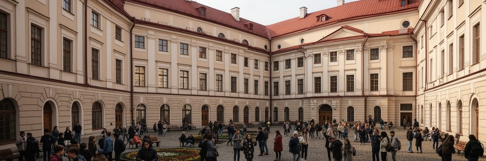
ヴィリニュスは大学都市としての性格も強いです。ヴィリニュス大学の中庭、図書館、天文台、教会、講義棟は、旧市街の中心で学問と都市生活が重なってきたことを示します。学生は人文、法学、医学、自然科学、IT、国際関係、芸術を学び、カフェ、書店、劇場、寮、共有住宅、研究施設を行き来します。大学は単に若者を集める施設ではなく、行政、裁判、病院、企業、メディア、文化政策へ人材を送り込む都市の循環装置です。リトアニア語で学ぶことは国家文化の基盤ですが、英語のプログラムや国際研究も増え、ベラルーシやウクライナからの学生にとってもヴィリニュスは重要な避難先と学びの場になっています。知の都市であることは、華やかなキャンパスだけでは測れません。学生の家賃、アルバイト、奨学金、心身の健康、研究費、図書館の開放性、若い研究者の雇用が、都市の厚みを決めます。歴史地区に大学があるため、観光客と学生が同じ通りを使い、教会の隣で講義が行われ、古い建物の維持と現代的な教育環境の整備が同時に求められます。ヴィリニュスの大学文化は、過去を保存するだけでなく、政治的に揺れる地域で自由な思考と国際的な連帯を支える役割を担っています。学びの場が街の中心にあることが、この首都を開かれた議論の場にしています。夜の読書室や学生食堂も、都市の公共性を支える小さな基盤です。
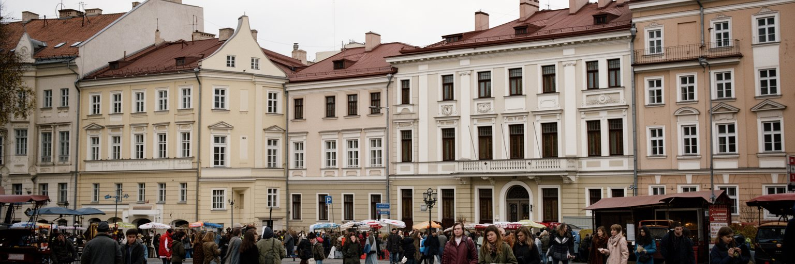
ヴィリニュスはリトアニア語の首都でありながら、ポーランド語、ロシア語、ベラルーシ語、ウクライナ語、英語が聞こえる多言語都市です。歴史的にこの地域は大公国、ポーランド・リトアニア共和国、ロシア帝国、戦間期ポーランド、ソ連、独立リトアニアの境界変化を経験し、言語と帰属が何度も組み替えられました。現在もポーランド系住民、ロシア語話者、ベラルーシから来た政治亡命者や専門職、ウクライナ避難民、国際企業で働く外国人が暮らします。言語は単なる会話の道具ではなく、学校、行政手続き、メディア、就職、家族史、政治的信頼に関わります。リトアニア語の公共性を強めることは国家の独立にとって重要ですが、少数派が自分の歴史を否定されたと感じれば、都市の統合は弱くなります。ヴィリニュスでは、学校、図書館、地域センター、医療、労働相談、文化行事が橋渡しの役割を持ちます。ウクライナ戦争以降、ロシア語の情報環境や記念碑をめぐる議論は敏感になりましたが、単純な排除では社会の不信を深めます。国境に近い首都の安定は、共通の制度と多様な記憶をどう両立させるかにかかっています。観光客が見る美しい旧市街の裏側には、子どもが何語で学ぶか、移民がどの窓口へ行くか、隣人とどの記憶を共有できるかという日々の政治があります。通訳や地域メディアの質も、安心して暮らすための都市インフラです。
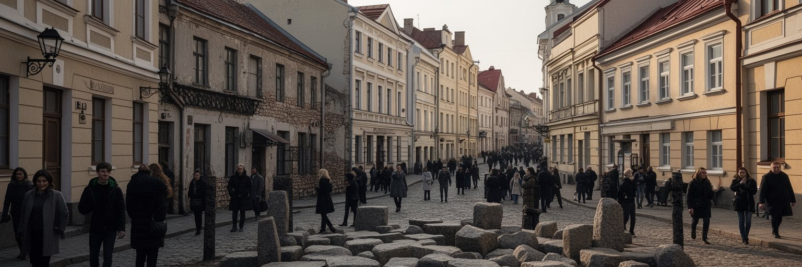
ヴィリニュスはかつて「北のエルサレム」と呼ばれるほど重要なユダヤ文化の中心でした。宗教学者、印刷、学校、シナゴーグ、イディッシュ語の生活、商業、慈善、政治運動が旧市街と周辺に広がり、東欧ユダヤ世界の知的な結節点になっていました。しかし第二次世界大戦とホロコーストは、この共同体をほぼ破壊しました。旧ゲットーの街路、記念碑、博物館、ポナリの虐殺地への記憶は、観光の明るい石畳だけでは語れない都市の深い傷を示します。現在のヴィリニュスでユダヤ史を扱うことは、過去の栄光を懐かしむだけではなく、誰が加害し、誰が救い、誰が沈黙し、戦後に何が消されたのかを問い続けることです。ソ連期にはユダヤ共同体の記憶が別の政治的語りに埋もれ、独立後に再び資料、墓地、建物、証言を掘り起こす作業が進みました。街を歩くと、かつての祈りや市場の声は直接聞こえませんが、地名、石板、博物館、研究、教育が失われた都市を想像させます。ヴィリニュスの多文化性を称えるなら、その喪失と暴力も同時に語る必要があります。ユダヤ史は観光の一項目ではなく、都市が自分の記憶をどれだけ誠実に扱えるかを測る基準です。静かな中庭や狭い道に残る不在を読むことが、ヴィリニュスを深く理解する入口になります。学校教育と案内板が、今も沈黙を破る助けになります。
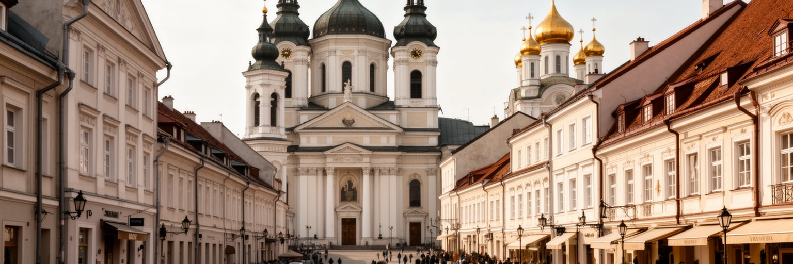
ヴィリニュスの景観を強く印象づけるのは、教会の多さとバロックの空間です。大聖堂、聖アンナ教会、聖ペテロ・パウロ教会、夜明けの門、正教会、修道院は、カトリックを中心としながらも複数の信仰が都市を作ってきたことを示します。リトアニアはヨーロッパで比較的遅くキリスト教化された地域であり、信仰は国家形成、ポーランドとの結びつき、帝国支配への抵抗、ソ連期の抑圧、独立後の公共文化と絡み合ってきました。教会は観光名所である前に、祈り、結婚、葬儀、音楽、慈善、教育、巡礼の場所です。夜明けの門の聖母像のように、個人の祈りと国家的な象徴が重なる場所もあります。一方で、現代のヴィリニュスには世俗的な若者、IT労働者、移民、少数宗教、無宗教の住民も多く、信仰の意味は一つではありません。宗教建築を守るには、屋根や壁の修復だけでなく、共同体がその場所を使い続けられる条件が必要です。観光客が写真を撮る空間と、地元の人が静かに祈る空間が重なるため、敬意ある利用も問われます。ヴィリニュスのバロックは華やかな装飾でありながら、政治的な境界地域で信仰と文化が自己を守ってきた表現でもあります。鐘の音、祭礼、オルガン、聖像、ろうそくの光は、首都の日常に時間の厚みを与えています。修復職人や合唱団の仕事も、この景観を支えています。
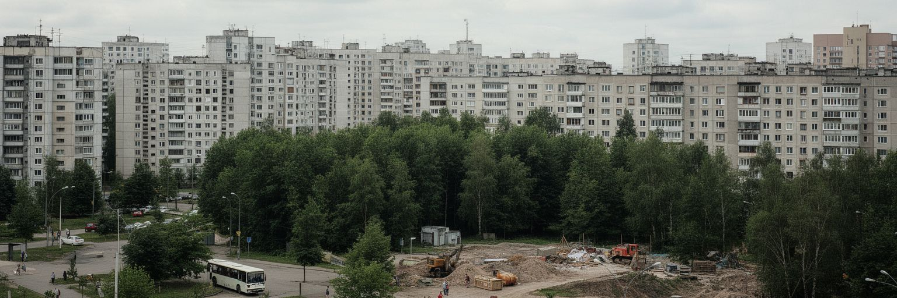
ヴィリニュスの暮らしは、旧市街の美しさだけでなく、住宅地の広がりから見る必要があります。中心部には改修された集合住宅、木造の古い家、新しいマンションがあり、周辺にはソ連期の大規模団地、郊外の戸建て、商業施設、学校、森に近い住宅地が続きます。人口と所得が増える首都では住宅需要が強く、再開発と新築が街を変えています。若い専門職や帰国者には選択肢が増える一方、学生、低所得世帯、高齢者、移民、子育て世帯は家賃や通勤時間に悩みます。郊外へ出れば広さを得やすくても、車依存、渋滞、学校不足、公共交通の頻度、冬の移動が問題になります。ソ連期団地では断熱、暖房、エレベーター、共有部、駐車場、緑地の維持が生活の質を左右します。中心部の再生地区ではカフェやオフィスが増え、活気が出る反面、住民の入れ替わりや地価上昇も起こります。ヴィリニュスは森と川が近く、低密度の魅力を持つ都市ですが、その魅力を無計画な郊外化へ使えば、移動距離とインフラ費が増えます。住宅政策は建物の数だけでなく、バスや自転車道、学校、保育、医療、商店、公園と一緒に考える必要があります。住む場所を選べることが、成長する首都の公平さを決めます。空き地の使い方や駐車場の量も、近隣の暮らしやすさを左右します。冬の除雪と照明もさらに重要な条件なのです。
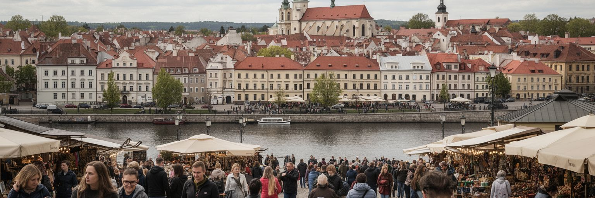
ヴィリニュス観光は、世界遺産の旧市街、教会、ゲディミナスの塔、夜明けの門、大学、市場、ウジュピス、川辺の散歩を中心に組み立てられます。街は徒歩で回りやすく、バルト三国の旅、ポーランドやラトビアとの周遊、会議、週末旅行、歴史を学ぶ旅の拠点になります。飲食店やホテル、ガイド、博物館、土産物店、交通、文化イベントは観光収入に支えられ、若い人の仕事も生みます。しかし観光が強くなるほど、旧市街の住民生活との調整が必要です。短期賃貸、騒音、価格上昇、観光向け店舗の増加は、暮らし続ける人を減らす可能性があります。観光客がユダヤ史やソ連期、独立運動、多言語社会を深く知る機会を持てば、街は単なるバロックの背景ではなく、複雑な歴史を学ぶ場になります。逆に、写真だけを消費する観光が増えると、都市の記憶は浅くなります。ヴィリニュスの観光政策には、文化財保全、住民向け商店、公共トイレ、清掃、歩行者空間、冬季の雇用、周辺地区への分散が求められます。旧市街の魅力を守るには、住民が夜も朝も普通に使える街であることが欠かせません。旅人にとって歩きやすい都市であり続けることと、住民にとって住みやすい都市であり続けることは、同じ問題の表と裏です。市場や住宅街へ足を延ばす旅は、生活の厚みを伝えます。季節差への備えも大切です。
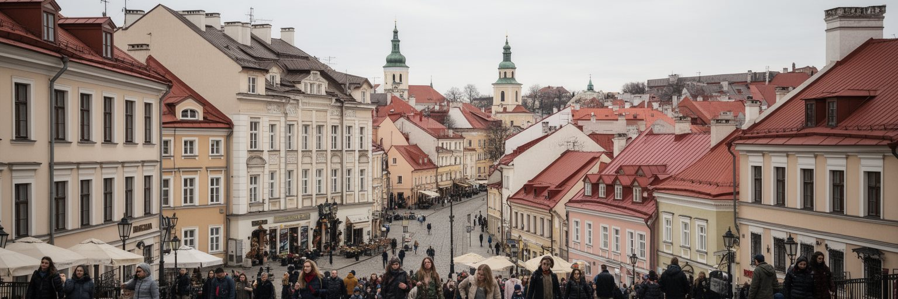
ヴィリニュスは人口規模だけで見れば巨大都市ではありませんが、ヨーロッパの境界を読む論点が濃く集まる首都です。大公国の記憶、世界遺産の旧市街、カトリックと正教、ユダヤ文化の喪失、ポーランド語圏とロシア語圏、ベラルーシやウクライナとの近さ、EUとNATOの安全保障、フィンテックとITの成長、大学と若者、住宅費と郊外化が、短い移動距離の中で重なります。街の魅力は、バロックの美しさだけでも、経済成長の勢いだけでもありません。旧市街を歩く観光客、議会で働く公務員、大学で学ぶ学生、IT企業の専門職、バスで通勤するサービス労働者、祈りに来る信者、戦争から逃れた人、記憶を調べる研究者が、同じ都市の空間を使っている点にあります。その共有を続けるには、文化財を守りながら住宅を確保し、多言語の住民を包摂し、交通を整え、成長産業の利益を広く生活へ戻す必要があります。ヴィリニュスを読むことは、過去と未来、中心と周縁、信仰と世俗、国境と日常を分けずに見ることです。静かな丘と川の首都は、東欧と北欧、記憶と安全保障、技術と生活の接点として、二十一世紀の都市の課題をはっきり映しています。小さな首都だからこそ、制度の選択が街角の変化として見えやすいです。そこに、ヴィリニュスを世界の都市として読む理由があります。今も有効です。